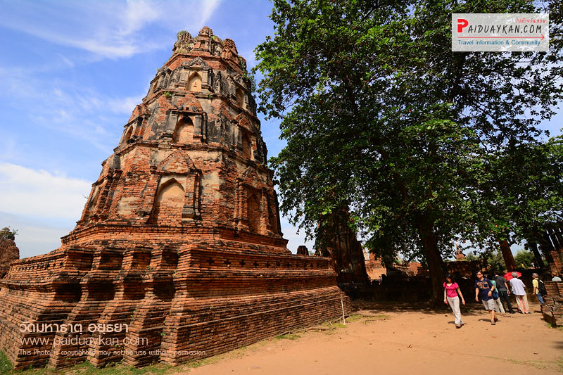
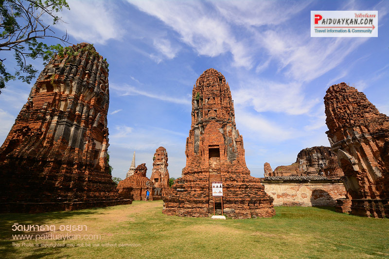

ประวัดมหาธาตุ
|
วัดมหาธาตุ
-
- วัดมหาธาตุ ตั้งอยู่เชิงสะพานป่าถ่าน ทางทิศตะวันออกของวัดพระศรีสรรเพชญ์
มีสิ่งที่โดดเด่น คือ เศียรพระพุทธรูปกว่าร้อยปีใน รากไม้ โดยเศียรพระพุทธรูป
เป็นพระพุทธรูปหินทรายเหลือแค่ส่วนเศียร สำหรับองค์พระนั้นหายไป และเป็นเศียรพระพุทธรูปเป็น ศิลปะอยุธยา วางอยู่ในรากโพธิ์ข้างวิหาร
คาดว่าเศียรพระพุทธรูปนี้จะหล่นลงมาอยู่ที่โคนต้นไม้ในสมัยเสียกรุงจนรากไม้ขึ้นปกคลุม ทำให้มีความ งดงามแปลกตา จนเลื่องลือกลายเป็นสิ่งมหัศจรรย์
ทำให้วัดแห่งนี้กลายเป็นวัดที่มีชื่อเสียงและ เป็นที่รู้จักทั้งชาวไทย และชาวต่างชาติ
สิ่งที่น่าสนใจในวัดมหาธาตุ อยุธยา |
พระปรางค์ขนาดใหญ่
 |
เจดีย์แปดเหลี่ยม
|
วิหารที่ฐานชุกชี
 |
- ชื่อ-นามสกุล
- นายชานนทร์ ลีลาพิพิธพัฒน์
- นักศึกษาชั้นปีที่3
- คณะครุศาตร์ สาขาคอมพิวเตอร์ศึกษา
กลับไปข้างบน